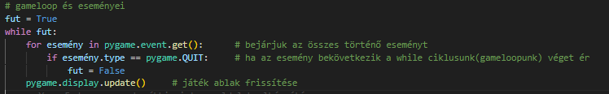

Mindenek előtt be kell importálni a pygame modult.
import pygame
Meg kell hívnunk az init függvényt - mindig egy kötelező elem
pygame.init()
A következő lépésben létrehozzuk az ablakot és meghatározzuk a nagyságát, amelyet egy tuple-ben teszünk meg.
tuple: Több érték tárolását teszi lehetővé egy változón belül
pygame.display.set_mode((x,y))

Módosíthatjuk az ablak címet:
pygame.display.set_caption('')

Most pedig megcsináljuk a gameloopot és azt hogy be tudjuk zárni az oldalt.
Végül pedig meghívjuk a quit() függvény a program leállításának érdekében
pygame.quit()